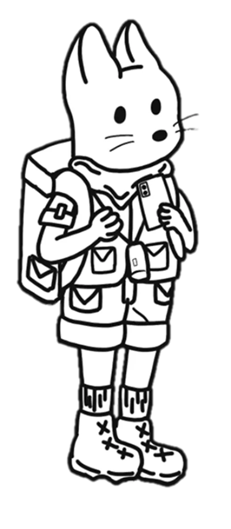

Map to Me
애니메이션

디자인 컨셉
전체적인 디자인은 귀엽고 따뜻한 이미지를 중심으로 구성.
탐험가 복장의 고양이 캐릭터, 도트 느낌의 배경, 수수께끼처럼 제시되는 퀴즈, 그리고 마지막
보물상자까지 모든 요소가 스토리 속 세계관에 맞게 통일되도록 디자인.
파스텔톤과 심플한 일러스트 스타일을 사용해, 시청자에게 시각적 부담 없이 친근하게 다가갈 수 있도록
하였고 다양한 모션과 이미지 변화로 영상에 생동감과 몰입감을 더함.